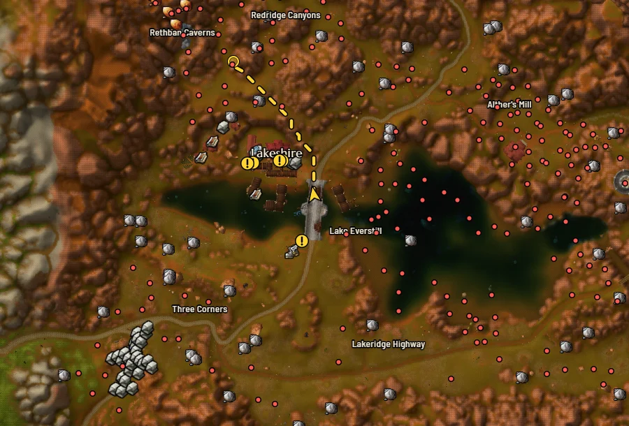
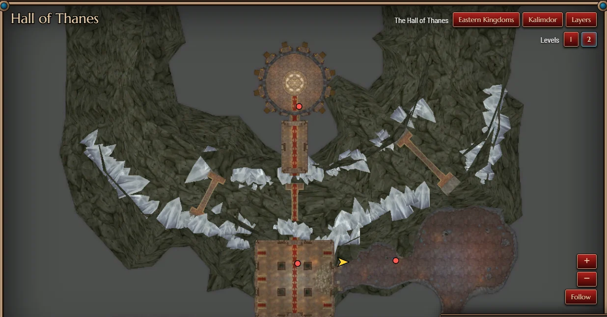
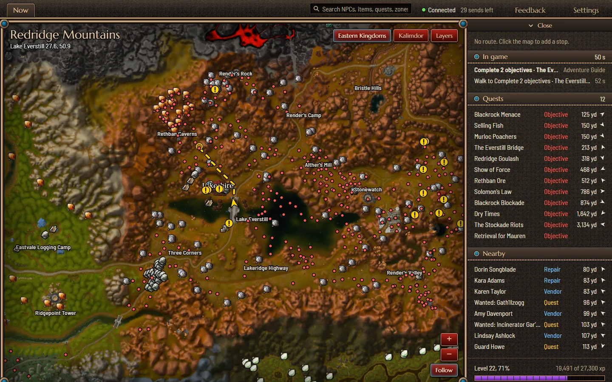
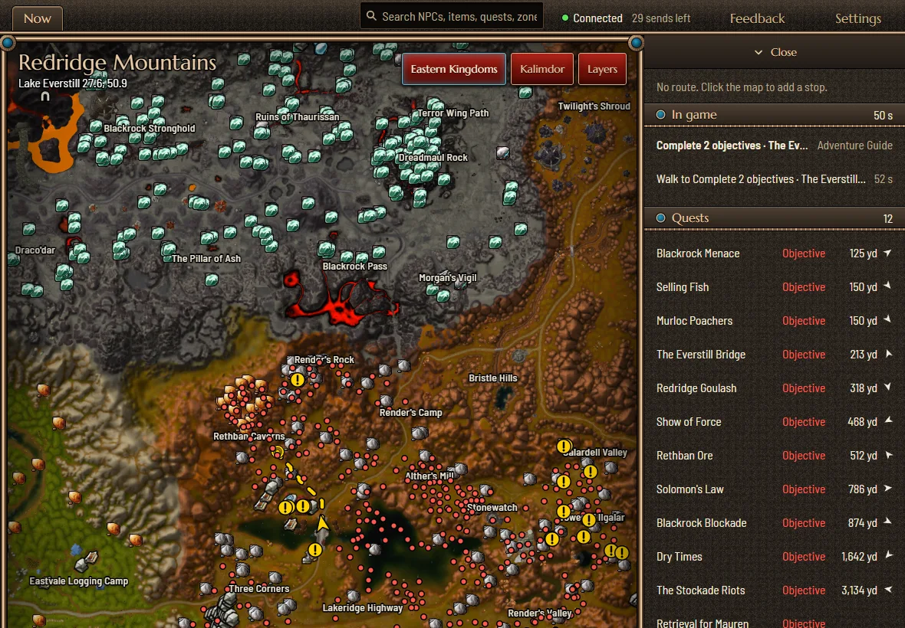
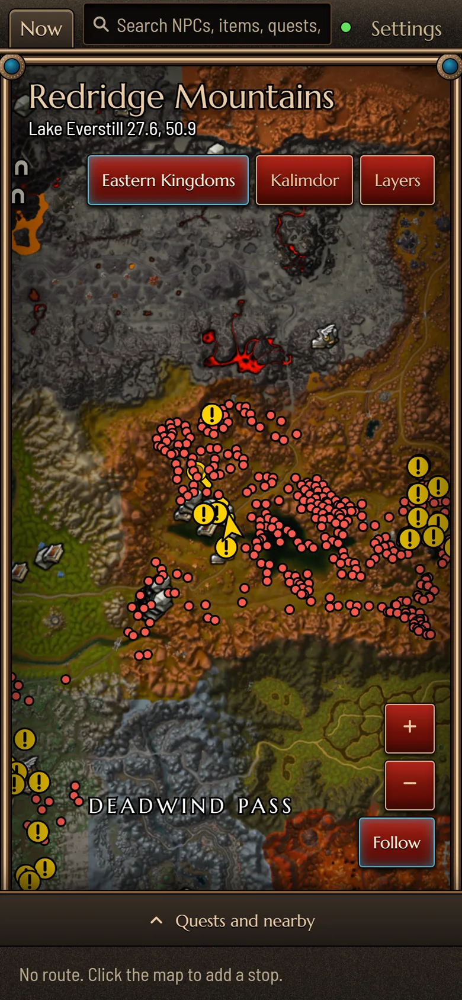
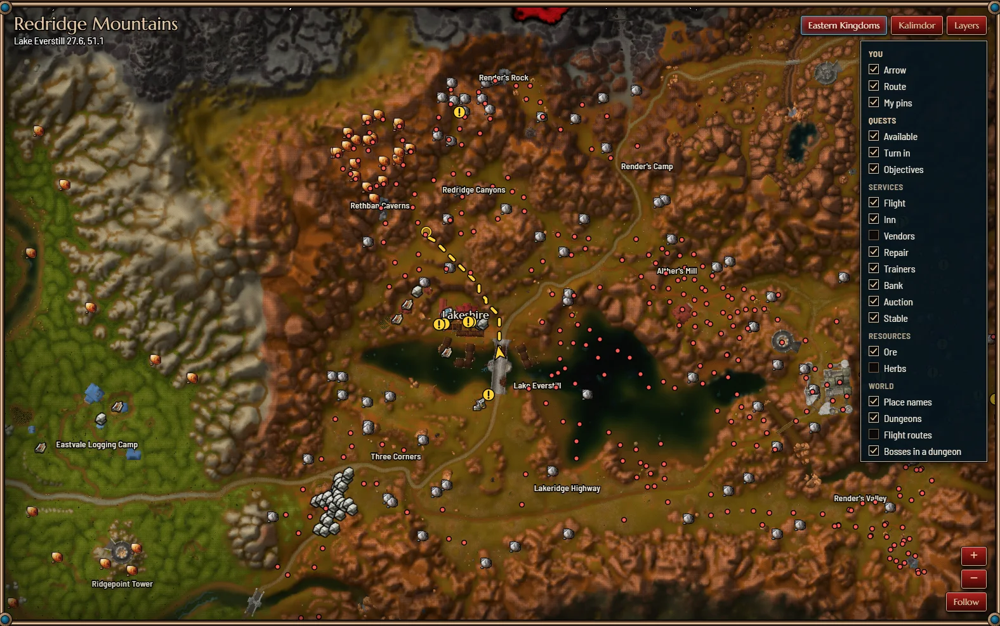

Your position on the map, in real time
Even inside dungeons. World of Warcraft: Forever on your second screen.

-
1. The addon
Install Twinmap Forever from CurseForge and restart the game.
Get the addon on CurseForge -
2. The app
Free, for Windows 10 and 11. It builds the map from your own game files and updates itself.
Get the app for Windows -
3. Play
Log in with a character. Your arrow appears on its own.
Even inside dungeons
Your arrow moves through the rooms of dungeons and raids as you do, with every boss marked on the way.
The game gives addons no position in there, so Twinmap reads your place from the minimap on your screen. Keep it visible and not rotating.

On any screen you have
A second monitor is the best seat. No second monitor? Open the same live map in the browser of a laptop, a tablet or a phone on your home network: scan a code once, and there is nothing to install.



Show only what you need
Your quests, your party, flight masters, inns, trainers, repair, banks, ore, herbs, dungeons: each one a layer you turn on or off. Search finds any NPC, item or quest, with the distance on foot.
And it goes both ways: mark a point or build a route on Twinmap, and it appears in the game.

How it works
- From the game to the app
- The addon draws a line one pixel tall at the edge of the game window and writes your position, zone and quests in the colors of its pixels. The app reads that line from the screen. It never touches the game's memory and never plays for you.
- The map
- Built on your computer from the files of your own game, so it always matches your version. No map is downloaded.
- Privacy
- Nothing leaves your computer. No account, no ads, no tracking. The only connection is to GitHub, to look for a newer version.
- Photosensitivity
- The addon sends data by changing the colors of a one pixel line at the edge of the game window, many times per second. Its settings in the game can slow it down or pause it.
Free, open, and still growing
- The code
- All of it is public on GitHub, under the GNU General Public License, version 3. Free to use, with no ads and no paid features, and it will stay that way.
- Contribute
- Anyone can. Report a bug or propose an idea, or send a pull request with code. No GitHub account? Write to dev@twinmap.app, in English or in Italian.
- What is planned
- Your party inside dungeons, travel times and flight paths, zones colored by level, your whole quest log, professions and reputations, alerts, bags and bank, a macro builder, leveling guides. Plans, not promises: the full list is on GitHub.
- Support
- Twinmap is made in spare time and costs nothing. If it is useful to you and you feel like it, you can buy me a coffee on Ko-fi. It is never needed, and it unlocks nothing.
Get Twinmap
- 1. The addon
- Get the addon on CurseForge
- 2. The app
-
Get the app for Windows
Each installer is scanned by VirusTotal when it is published.